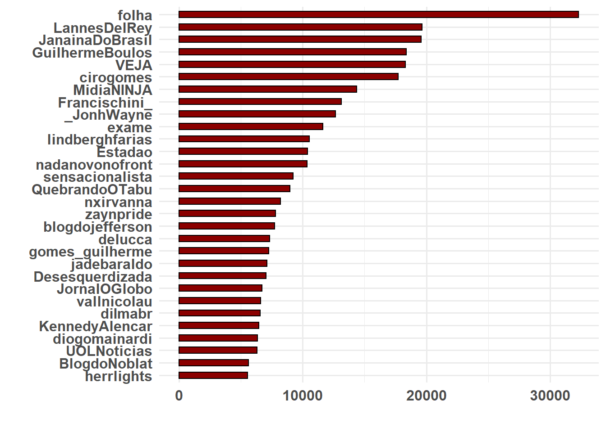
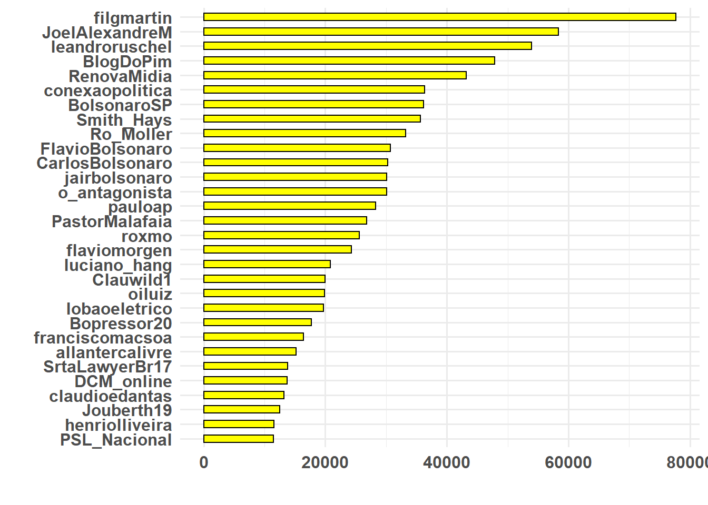
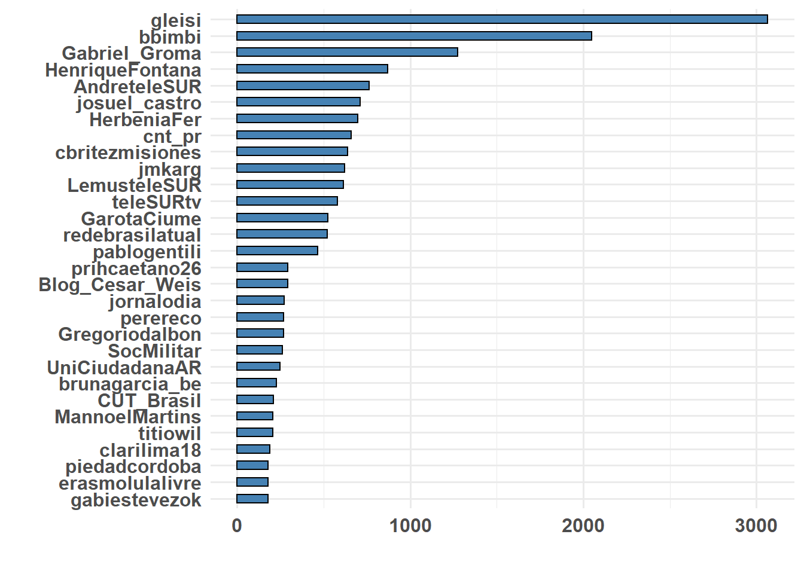
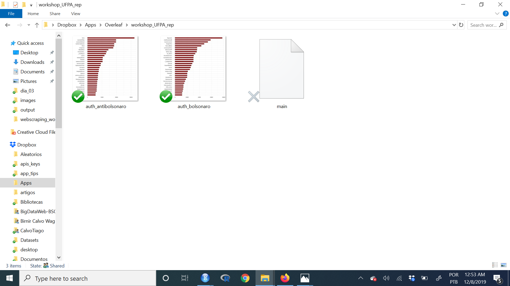
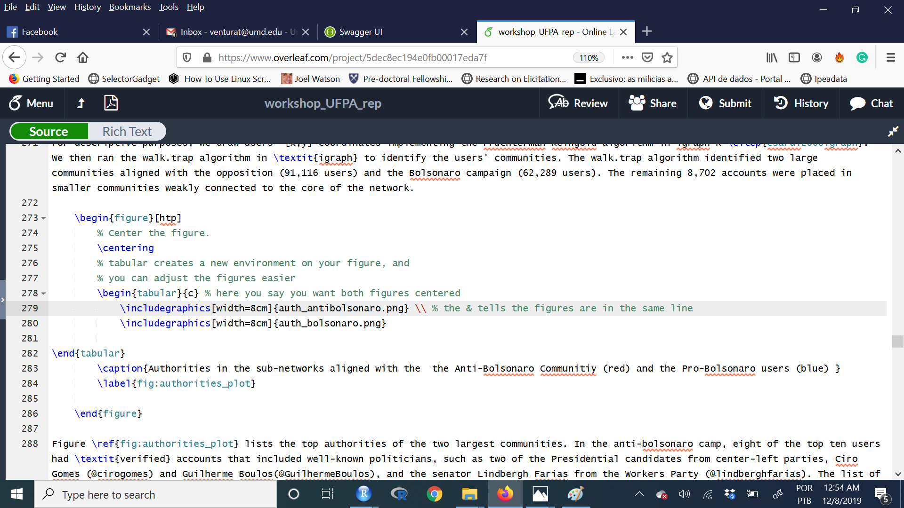
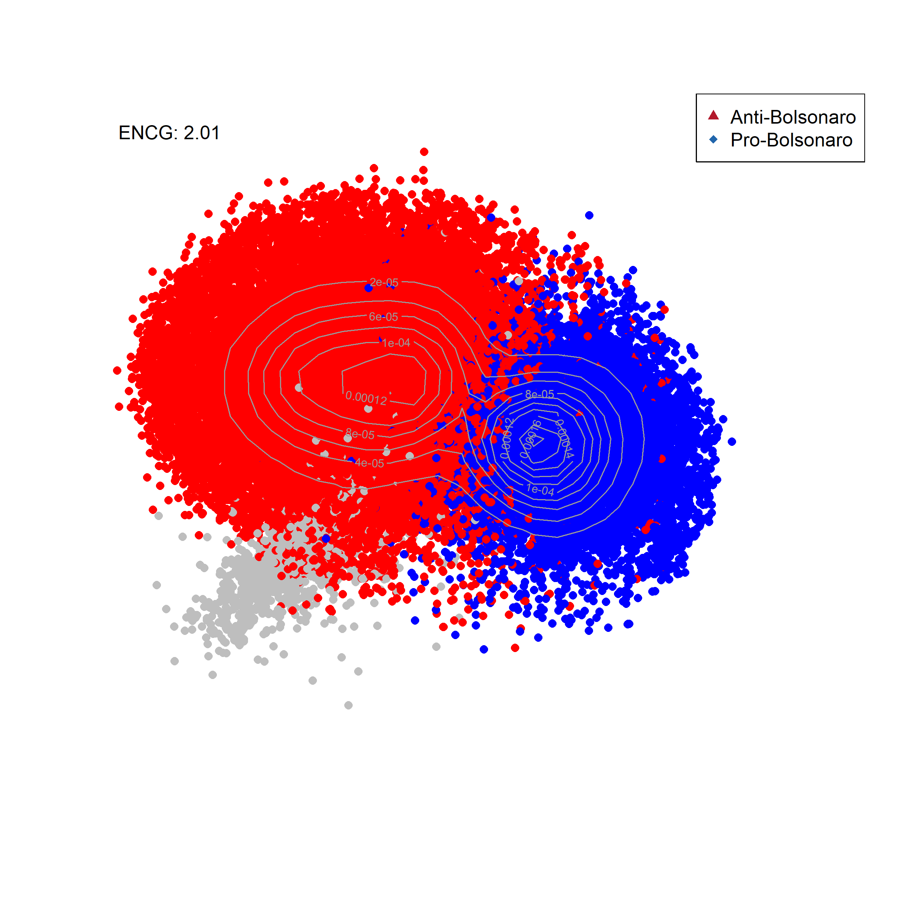
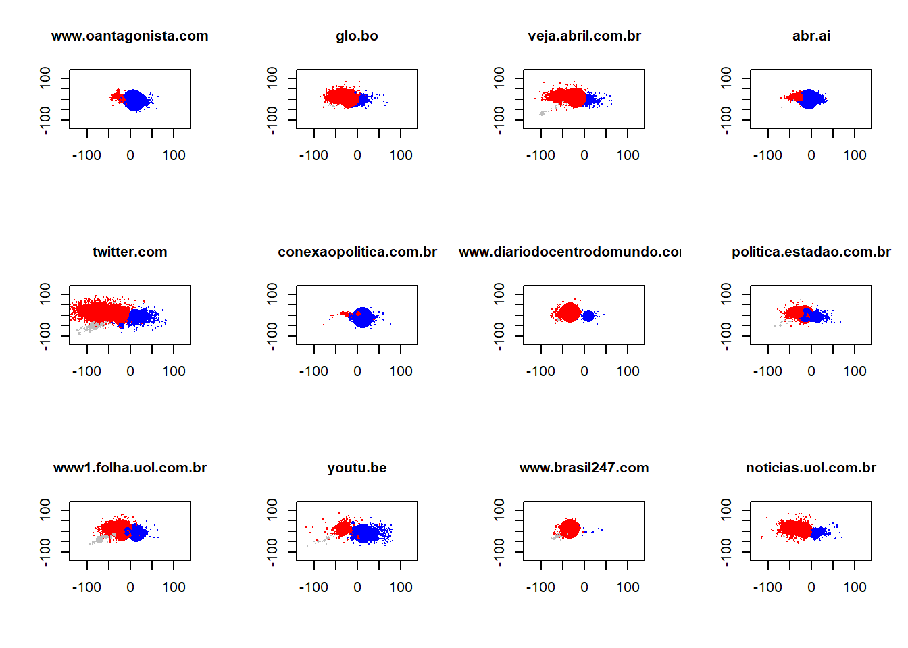

O objetivo do dia de hoje é replicar uma análise do início ao fim utilizando dados do Twitter. Isso nos dará prática acadêmica em análise de dados do twitter e em análise de redes Objetivo também mostrar para vocês um pouco como eu produzo minhas pesquisas, combinando a análise em R com a escrita acadêmica.
Vamos replicar parte da análise de dados do meu artigo com Ernesto Calvo e Natalia Aruguete Polarization, News Sharing, and Gatekeeping: A study of the Bolsonaro Election. Vamos focar principalmente na parte descritiva do paper. Os modelos estatísticos abordam métodos que não cubrimos aqui, e ficarão para o próximo curso em 2020. Este paper ainda está em andamento, portanto, peço algum cuidado antes de compartilhá-lo. A maior parte destes códigos abaixo são emprestados de Ernesto Calvo
Todo o material para o dia de hoje está disponível neste link. Baixe todos os arquivos em uma pasta, e direcione o R para esta pasta usando a função setwd para definir sua estação de trabalho.
O primeiro passo é abrir o banco de dados. Nós coletamos dados do twitter na semana anterior ao segundo turno da eleição no Brasil. Para este artigo, utilizamos um programa em Python para fazer o download dos dados. Por isto, o formato dos dados é ligeiramente diferente do que vimos anteriormente.
# Ative os pacotes
library(tidyverse)
library(igraph)
library(data.table)
library(arm)
library(broom)
library(RColorBrewer)
library(KernSmooth)
# Abra o banco de dados
getwd()[1] "C:/Users/Tiago Ventura/Dropbox/webscraping_workshop_ufpa/html/dia_03"# setwd('./html/dia_03/')
load("dados_bolsonaro.RData")
summary(dados_bolsonaro) text tweetidT tweetidRT
Length:2943993 Length:2943993 Length:2943993
Class :character Class :character Class :character
Mode :character Mode :character Mode :character
friendsT friendsRT followersT
Length:2943993 Length:2943993 Length:2943993
Class :character Class :character Class :character
Mode :character Mode :character Mode :character
followersRT timeRT timeT
Length:2943993 Length:2943993 Length:2943993
Class :character Class :character Class :character
Mode :character Mode :character Mode :character
verifiedRT verifiedT nameauth
Length:2943993 Length:2943993 Length:2943993
Class :character Class :character Class :character
Mode :character Mode :character Mode :character
namehub web device
Length:2943993 Length:2943993 Length:2943993
Class :character Class :character Class :character
Mode :character Mode :character Mode :character Há milhões de formas de análisar dados de twitter. Porém, um dos elementos centrais em plataformas como estas é o fato dos usuários interagirem entre si. Portanto, estes usuários se conectam em redes. Uma rede possui dois elementos básicos: um nó - usuário - e um link - que iremos considerar um retweet. Por isso, construíremos uma rede de retuítes entre usuários.
No banco de dados, as variáveis que terminam com T são referentes ao usuário que foi retuitado e as com RT se referem aos que retuitaram. Desta forma, a ligação entre T e RT formam os links desta rede.
Para construir a rede de conexões, vamos usar o pacote igraph. Este pacote armazena dados de forma um tanto distinta, porém, é a forma mais intuitiva de manipular dados de rede em R.
# Construíndo uma rede
# Passo 1: Selecione os nós -- Autoridades -> Hub
data <- cbind(dados_bolsonaro$namehub, dados_bolsonaro$nameauth)
head(data) [,1] [,2]
[1,] "jeffer21" "futebol_pontual"
[2,] "jeffer21" "lobaoeletrico"
[3,] "jeffer21" "MouraoVice"
[4,] "jeffer21" "MouraoVice"
[5,] "jeffer21" "maepatriota"
[6,] "jeffer21" "conservadores" # Passo 2: Crie a estrutura da rede
net <- graph.empty() # Cria um gráfico vazio
net <- add.vertices(net, length(unique(c(data))), name = as.character(unique(c(data)))) # número de nós
net <- add.edges(net, t(data))
summary(net)IGRAPH 93931bb DN-- 162107 2943993 --
+ attr: name (v/c)# Passo3: Adicione as variáveis
E(net)$text <- dados_bolsonaro$text
E(net)$tweetidT <- dados_bolsonaro$tweetidT
E(net)$tweetidRT <- dados_bolsonaro$tweetidRT
E(net)$friendsT <- dados_bolsonaro$friendsT
E(net)$followersT <- dados_bolsonaro$followersT
E(net)$friendsRT <- dados_bolsonaro$friendsRT
E(net)$followersRT <- dados_bolsonaro$followersRT
E(net)$timeRT <- dados_bolsonaro$timeRT
E(net)$timeT <- dados_bolsonaro$timeT
E(net)$verifiedRT <- dados_bolsonaro$verifiedRT
E(net)$verifiedT <- dados_bolsonaro$verifiedT
E(net)$nameauth <- dados_bolsonaro$nameauth
E(net)$namehub <- dados_bolsonaro$namehub
E(net)$web <- dados_bolsonaro$web
E(net)$device <- dados_bolsonaro$device
summary(net)IGRAPH 93931bb DN-- 162107 2943993 --
+ attr: name (v/c), text (e/c), tweetidT (e/c), tweetidRT (e/c),
| friendsT (e/c), followersT (e/c), friendsRT (e/c), followersRT
| (e/c), timeRT (e/c), timeT (e/c), verifiedRT (e/c), verifiedT
| (e/c), nameauth (e/c), namehub (e/c), web (e/c), device (e/c)O próximo passo é calcular algumas estatísticas que produzem redes de conexões como as que vemos circulando em sites por aí. Para isso, há dois processos. Ambos consistem em aplicar algoritimos para extrair informações da rede. Primeiro, construímos um layout – achamos pontos para os nós em duas dimensões - e depois identificamos quantas comunidades temos na nossa rede.
O código abaixo ensina como fazer isto. Porém, ambos os processos são muito intensos do ponto de vista computacional. Por isso, eu já salvei os objetos.
# Adicionar indegree and outdegree
V(net)$outdegree <- degree(net, mode = "out")
V(net)$indegree <- degree(net, mode = "in")
# Não rode isso. Vai travar seu PC
# Layout system.time(l <- layout_with_fr(net, grid = c('nogrid')))
# Comunidades my.com.fast <- walktrap.community(net)
# Abrindo o material salvo
load("vertices_bolsonaro.Rdata")
# Adicionando a rede
V(net)$l1 <- vertices_bolsonaro$l1
V(net)$l2 <- vertices_bolsonaro$l2
V(net)$membership <- vertices_bolsonaro$membership
summary(net)IGRAPH 93931bb DN-- 162107 2943993 --
+ attr: name (v/c), outdegree (v/n), indegree (v/n), l1 (v/n), l2
| (v/n), membership (v/n), text (e/c), tweetidT (e/c), tweetidRT
| (e/c), friendsT (e/c), followersT (e/c), friendsRT (e/c),
| followersRT (e/c), timeRT (e/c), timeT (e/c), verifiedRT (e/c),
| verifiedT (e/c), nameauth (e/c), namehub (e/c), web (e/c),
| device (e/c)comunidades <- data_frame(membership = V(net)$membership)
comunidades %>% count(membership) %>% arrange(desc(n)) %>% top_n(5)# A tibble: 5 x 2
membership n
<dbl> <int>
1 1 91116
2 2 62289
3 5 3211
4 4 653
5 9 257Vamso usar aqui o conceito de in-degree e out-degree. In-degree significa quantos links direcionados a si o usuário possui. Portanto, em nosso caso mostra quantos retweets este usuário recebeu. O oposto explica out-degree. Neste caso, out-degree significa quantos retuites o usuario deu.
Um usuário é chamado de autoridade quando seu in-degree é alto. Ou seja, muitos usuários o retuítam. Chamamos de hub quando seu out-degree é alto, pois este usuário retuíta muito frequentemente. Os robôs do Bolsonaro são, portanto, hubs – ninguém retuíta eles, eles somente retuítam muito, e muito rápido.
Para medir as autoridades de cada comunidades, irei primeiro selecionar as principais autoridades por comunidade. Em seguida, plotaremos quem são esses usuários, e quantos retuítes receberam neste período pré-eleição.
# Cria um banco com indegree
autoridade <- data_frame(name = V(net)$name, ind = V(net)$indegree, membership = V(net)$membership) %>%
filter(membership == 1 | membership == 2 | membership == 5) %>% split(.$membership) %>%
map(~arrange(., desc(ind))) %>% map(~slice(., 1:30))
# Comunidade 1
ggplot(autoridade[[1]], aes(x = reorder(name, ind), y = ind)) + geom_histogram(stat = "identity",
width = 0.5, color = "black", fill = "darkred") + coord_flip() + xlab("") +
ylab("") + theme_minimal(base_size = 12) + theme(plot.title = element_text(size = 22,
face = "bold"), axis.title = element_text(size = 16), axis.text = element_text(size = 12,
face = "bold"))
# Comunidade 2
ggplot(autoridade[[2]], aes(x = reorder(name, ind), y = ind)) + geom_histogram(stat = "identity",
width = 0.5, color = "black", fill = "yellow") + coord_flip() + xlab("") +
ylab("") + theme_minimal(base_size = 12) + theme(plot.title = element_text(size = 22,
face = "bold"), axis.title = element_text(size = 16), axis.text = element_text(size = 12,
face = "bold"))
# Comunidade 3
ggplot(autoridade[[3]], aes(x = reorder(name, ind), y = ind)) + geom_histogram(stat = "identity",
width = 0.5, color = "black", fill = "steelblue") + coord_flip() + xlab("") +
ylab("") + theme_minimal(base_size = 12) + theme(plot.title = element_text(size = 22,
face = "bold"), axis.title = element_text(size = 16), axis.text = element_text(size = 12,
face = "bold"))
Como a idéia deste workshop é também mostrar como eu organizo minha dinâmica de trabalho, o código abaixo mostra como eu conecto meus resultados e a escrita do artigo. A dinâmica é simples:
No meu caso, eu uso LaTeX para escrever meus artigos. Este workshop não é sobre LaTeX, porém, vou mostrar rapidamente com um exemplo. Se você quiser usar LaTeX, excelente. Caso não, continue em word, porém, use esse sistema para salvar arquivos.
# Cria uma função
plot_autoridades <- function(dados, nome_arquivo, base) {
ggplot(dados, aes(x = reorder(name, ind), y = ind)) + geom_histogram(stat = "identity",
width = 0.5, color = "black", fill = "darkred") + coord_flip() + xlab("") +
ylab("") + theme_minimal(base_size = 16) + theme(plot.title = element_text(size = 22,
face = "bold"), axis.title = element_text(size = 22), axis.text = element_text(size = 12,
face = "bold"))
ggsave(filename = paste0(base, nome_arquivo), width = 12, height = 12, units = "in",
pointsize = 22, bg = "white")
}
# Endereço no meu computador
base = "C:/Users/Tiago Ventura/Dropbox/Apps/Overleaf/workshop_UFPA_rep/"
# Usa a função para gerar o arquivo
plot_autoridades(dados = autoridade[[1]], base = base, nome_arquivo = "auth_antibolsonaro.png")
plot_autoridades(dados = autoridade[[2]], base = base, nome_arquivo = "auth_bolsonaro.png")Vejam como salva automáticamente em minha pasta.

Vejam como eu conecto meu editor de texto com minha pasta. Ou seja, eu gero o resultado no R, e salvo automaticamente na escrita. Não perco tempo indo e vindo entre programas.

A resposta é simples. É fato de que há uma curva de aprendizado em conectar esses diversos programas. Porém, com o tempo, tudo fica mais rápido. Não tem mais copia e cola entre o R, ou Stata, ou Excel, e o word. A integração entre R e LaTeX é fenômenal, e salva bastante tempo no seu futuro.
Em segundo lugar, minha pesquisa inteira é reproduzível e transparente, como toda ciência deve ser. Se eu mandar meu arquivo de R e meu arquivo de LaTeX, você pode reproduzir meu artigo inteiro.
Terceiro, cuidar de citações é mais fácil em LaTeX.
Quarto, arquivos de LaTeX são mais bonitos 😊
Vamos agora visualizar um pouco das atividades nestes dados usando a rede de retweets. A diferença é a seguinte. Mais importante do que entender descrições agregadas dos dados, é fundamental entender em quais comunidades destes dados a informação é mais ativadade. Esta lógica nos permite entender quais hastags são mais ativades por seguidores de Bolsonaro, e por opositores, quais termos, quais mídias, entre outros.
Para tornar o gráfico um pouco mais limpo, eu criei uma função onde calculo a densidade de usuários na rede. Isso evita que eu plote todos os usuários da rede.
# Funcao para visualizar a red
my.den.plot <- function(l = l, new.color = new.color, ind = ind, legend) {
# Numero efectivo de Comunidades
ENCG <- round(1/sum(round(table(new.color)/sum(table(new.color)), 3)^2),
2)
est <- bkde2D(l, bandwidth = c(10, 10))
plot(l, cex = log(ind + 1)/4, col = new.color, pch = 16, xlim = c(-160,
140), ylim = c(-140, 120), xlab = "", ylab = "", axes = FALSE)
contour(est$x1, est$x2, est$fhat, col = gray(0.6), add = TRUE)
legend("topright", c(legend[1], legend[2]), pch = 17:18, col = c("#B2182B",
"#2166AC"))
text(-140, 115, paste("ENCG: ", ENCG, sep = ""), cex = 1, srt = 0)
}
# Crie as cores para cada comunidade
# Building a empty containes
temp <- rep(1, length(V(net)$membership))
new.color <- "white"
new.color[V(net)$membership == 1] <- "red" ####
new.color[V(net)$membership == 2] <- "blue" ####
new.color[V(net)$membership == 5] <- "gray" ####
# Adiciona a nova cor
V(net)$new.color <- new.color
# Plot
# save first
png(filename = "Bolsonarobasicmap.png", width = 8, height = 8, units = "in",
pointsize = 12, bg = "white", res = 300)
my.den.plot(l = cbind(V(net)$l2, V(net)$l1), new.color = V(net)$new.color, ind = V(net)$indegre,
legend = c("Anti-Bolsonaro", "Pro-Bolsonaro"))
dev.off()png
2 
O principal argumento do artigo que estamos replicando aqui se refere à quando e como usuários nas redes sociais interagem com blogs, sites e jornais on line. Para testarmos a teoria, realizamos um conjunto de testes estatísticos. Porém, antes disso, demonstramos como as mídias no twitter são ativadas de forma distinta por usuários. Ou seja, basicamente criamos uma forma para detectar em quais áreas da rede, cada mídia é mais ativada. Para isso, usamos os links que usuários anexam aos seus tuítes quando estão compartilhando uma notícia.
Nos próximos códigos, vou demonstrar como contruímos essas estimativas, e replicar a figura 6 do artigo.
# Vamos primeiro selecionar as mídias mais ativadas
keynews <- head(sort(table(unlist(E(net)$web)), decreasing = TRUE), 12)
keynews.names <- names(keynews)
N <- length(keynews.names)
count.keynews <- array(0, dim = c(length(E(net)), N))
# Looping
for (i in 1:N) {
temp <- grepl(keynews.names[i], E(net)$web, ignore.case = TRUE)
# temp <- str_match(E(net)$text,'Arangur[A-Za-z]+[A-Za-z0-9_]+')
count.keynews[temp == TRUE, i] <- 1
Sys.sleep(0.1)
}
# Setting the names of the media
colnames(count.keynews) <- keynews.names# Conexoes de Vertices e Edges Vamos recuperar todos os nós e edges que
# estão ligados uns com os outros.
el <- get.adjedgelist(net, mode = "all")
al <- get.adjlist(net, mode = "all") [1] 47 188 1408 1408 1771 1853 2197 2662 5347 8017
[11] 9930 11807 11807 13435 16527 27569 27781 28090 29874 31508
[21] 35401 35401 36186 41253 43403 43403 43403 43403 47826 48295
[31] 49788 50585 54540 55862 56208 56616 56616 60101 61526 65337
[41] 66191 69025 73941 82405 83865 87228 87228 88106 88106 89031
[51] 89265 90991 96382 105144 105159 105811 106669 106669 106669 107060
[61] 107060 108018 108018 133347 138393 142192 142448 142448 142839 142850
[71] 142850 142850 142850 142871 142887 142923 142952 146364 146652fomfE <- function(var = var, adjV = adjV, adjE = adjE) {
stemp <- sapply(adjE, function(x) sum(var[x]))
mstemp <- sapply(adjV, function(x) mean(stemp[x]))
out <- cbind(stemp, mstemp)
}
# Cria um container
resultado_midia <- array(0, dim = c(length(V(net)), N))
for (i in 1:N) {
bb <- fomfE(count.keynews[, i], al, el)
bb[bb[, 1] == "NaN"] <- 0
resultado_midia[, i] <- bb[, 1]
}
colnames(resultado_midia) <- keynews.names
head(resultado_midia) www.oantagonista.com twitter.com www1.folha.uol.com.br glo.bo
[1,] 3 0 1 0
[2,] 0 2 3 1
[3,] 3 1 0 0
[4,] 0 1 9 3
[5,] 114 39 17 9
[6,] 5 2 1 1
conexaopolitica.com.br youtu.be veja.abril.com.br
[1,] 1 2 0
[2,] 0 0 1
[3,] 4 0 1
[4,] 0 3 0
[5,] 28 22 3
[6,] 2 4 0
www.diariodocentrodomundo.com.br www.brasil247.com abr.ai
[1,] 0 0 0
[2,] 0 0 0
[3,] 0 0 2
[4,] 30 34 3
[5,] 1 0 9
[6,] 1 0 1
politica.estadao.com.br noticias.uol.com.br
[1,] 0 0
[2,] 0 0
[3,] 0 0
[4,] 1 9
[5,] 9 3
[6,] 1 1Você pode facilmente fazer um por um. Porém, escrevi um loop curtinho para plotar eles juntos.
op <- par(mfcol = c(3, 4))
for (i in 1:12) {
plot(V(net)$l2, V(net)$l1, pch = 16, col = V(net)$new.color, cex = log(resultado_midia[,
i] + 1)/3, ylim = c(-130, 130), xlim = c(-130, 130), xlab = "", ylab = "",
main = colnames(resultado_midia)[i], cex.main = 1)
}
par(op)
dev.off()null device
1 Aqui segue a versão da função caso eu quisesse salvar os resultados em minha pasta.
for (i in 1:12) {
# Salva primeiro
png(filename = paste0(base, "Embedded News", colnames(resultado_midia)[i],
"Bolsonaro.png"), width = 16, height = 8, units = "in", pointsize = 12,
bg = "white", res = 100)
# Plota o gráfico
plot(V(net)$l2, V(net)$l1, pch = 16, col = V(net)$new.color, cex = log(resultado_midia[,
i] + 1)/3, ylim = c(-130, 130), xlim = c(-130, 130), xlab = "", ylab = "",
main = colnames(resultado_midia)[i], cex.main = 1)
# Fecha a função de salvar
dev.off()
}O exercício do dia é relativamente simples. Qualquer informação pode ser visualizada em redes como fizemos para as mídias. Por isso, quero que vocÊs trabalhem em duas extensões.
Replicam os gráficos de ativação em rede para as dez hashtags mais populares na rede
Repliquem os gráficos para alguns temas chaves, por exemplo, segurança, corrupção, crime. Sejam criativos.